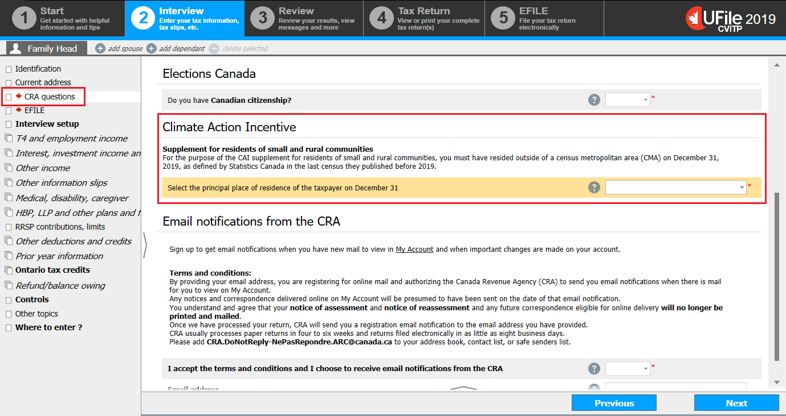
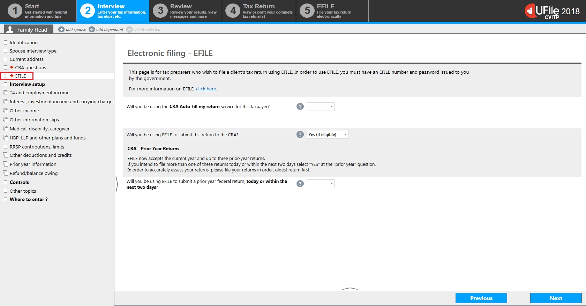
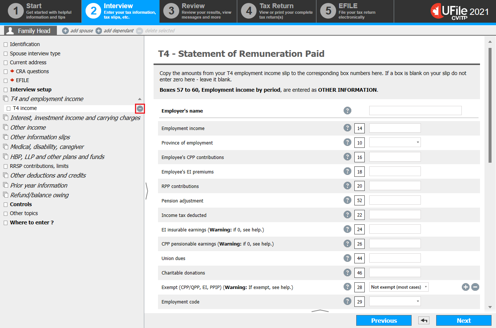
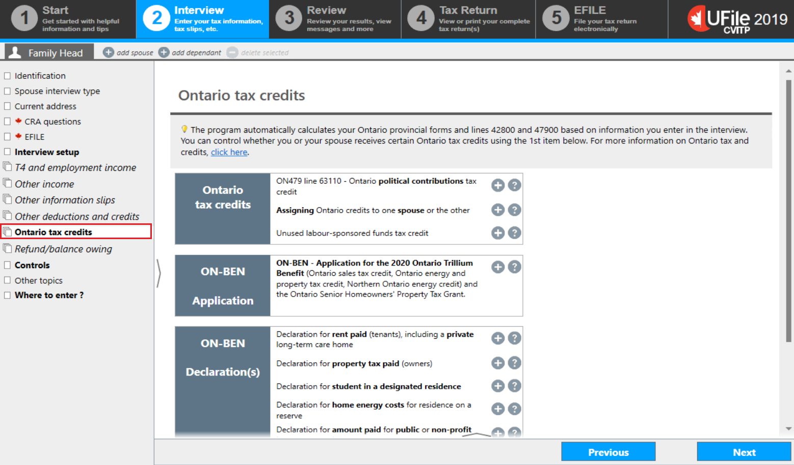

How to enter other information
On this page
- CRA questions
- EFILE
- Interview setup
- Entering the information slips
- Other income and information slips
- Other deductions and credits
- Provincial tax and credits
CRA questions

Text version
UFile screen
Under Interview tab
Family Head sub-tab
CRA questions topic is highlighted
On this screen
Select English or French to determine the language in which the tax return will be transmitted or printed. This selection will also determine the language the CRA will use when sending correspondence to the individual. The language you select in this section does not affect the language displayed in UFile as you complete the tax return.
Nice to know
Some fields are defaulted to No. Ensure that you go over these questions with the individual and adjust the answers as required.
Important note
If the individual answers Yes to the question Did you own foreign property in 2021 with a total cost over CAN$100,000?, and it is their first year as a resident of Canada, you are not required to complete a T1135.
However, if the individual answers Yes to the question Did you own foreign property in 2021 with a total cost over CAN$100,000?, and it is not their first year as a resident of Canada, you should not prepare the tax return because this is no longer a simple tax situation. For more information, Refer to Tax considerations for newcomers and indigenous peoples.
If an individual answers Yes to the question, Did you sell a principal residence in 2021?, refer to Sale of a principal residence in the tax guide for volunteers
Under the Elections Canada section, if you select Yes to the question Do you have Canadian citizenship?, an additional question will populate asking if the individual authorizes the CRA to share their information with Elections Canada.
In this example, based on the information entered in the Identification section, the individual may have to complete additional questions.
Text version
UFile screen
Under Interview tab
Family Head sub-tab
CRA question topic is highlighted
Climate action incentive section is highlighted
Climate Action Incentive, Supplement for residents of small and rural communities
Select the principal place of residence of the taxpayer on December 31 is highlighted
EFILE
Text version
UFile screen
Under Interview tab
Family Head sub-tab
EFILE topic is highlighted
On this screen
The Electronic filing – EFILE section is where you indicate if you will be using the CRA Auto-fill my return (AFR) service and if you will be using EFILE to submit the tax return.
Selecting Yes for the question Will you be using the CRA Auto-fill my return service for this taxpayer? will generate a CRA Authorization request in the left-side menu under the Tax Return tab. For more information on the Authorization request, refer to Auto-fill my return.
Interview setup

Text version
UFile screen
Under Interview tab
Family Head sub-tab
Interview setup topic is highlighted
On this screen
The Interview setup section is where you indicate any Specific situations that may apply to the individual. It is also where you select the types of income, deductions and/or credits that you will be entering on their tax return. When youtick applicable boxes and click Next, the corresponding topics will be generated in the left-side menu, ready for you to complete.
Nice to know
If you forget to select an item from this screen, you can always go back to the Interview setup section to tick the appropriate box. Some boxes are pre-selected by default, however, the return will not be impacted if any of these boxes do not apply to the individual’s situation.
Entering the information slips

Text version
UFile screen
Under Interview tab
Family Head sub-tab
T4 and employment income topic is highlighted
Plus sign beside T4 income (earned in any province except Quebec) is highlighted
On this screen
Each topic can be accessed from the left-side menu.
Once you have clicked on the topic, applicable income slips, deductions, and credits can be selected by clicking on the plus (+) sign next to each item. This will generate pages where income amounts or other required information are entered.
For example, if you select T4 income (earned in any province except Quebec), T4 income will appear as a sub-topic under T4 and employment income in the left-side menu.

Text version
UFile screen
Under Interview tab
Family Head sub-tab
T4 income topic is highlighted
T4 – Statement of Remuneration Paid page
Box 14 is highlighted
T4 – Statement of Remuneration Paid slip
Box 14: Employment income – line 10100: 11,000.00 is highlighted
If you select the T4 income sub-topic, the T4 – Statement of Remuneration Paid page will open, displaying fields that match with the boxes found on the T4 information slip. If an individual has multiple slips, you will need to enter each slip separately.
If the individual’s information slip has a box that is not accounted for in UFile, scroll down to Other information to select additional options.
As you add the issuer’s or employer’s names, they will populate on the left-side menu, making it easy to identify and review the information from a particular slip.
On this screen
Enter any remaining slips that you may have and click Next to bring you to the next section.
Text version
UFile screen
Under Interview tab
Family Head sub-tab
Minus sign beside T4 income topic is highlighted
If you need to correct any information for a particular slip, you can return to the page by clicking on the slip’s name in the left-side menu.
If you need to delete a slip, you can do this by clicking the minus (-) sign to the right of that specific slip.
Other income and information slips

Text version
UFile screen
Under Interview tab
Family Head sub-tab
Other income topic is highlighted
Other information slips topic is highlighted
On this screen
Situations that are not found in the Interview setup may be found under Other income or Other information slips in the left-side menu.
Other deductions and credits

Text version
UFile screen
Under Interview tab
Family Head sub-tab
Other deductions and credits topic is highlighted
On this screen
The Other deductions and credits section is where topics such as the Northern residents deduction are located.
For more information, refer to Northern residents deductions in the Tax guide for volunteers.
Provincial tax and credits
Text version
UFile screen
Under Interview tab
Family Head sub-tab
Ontario tax credits topic is highlighted
On this screen
Additional sections, such as provincial or territorial tax and credits, populate in the left-side menu based on the information provided in the Identification section. In this example, Ontario is the province of residence and, the Ontario tax credits section was generated.
For more information on Provincial and territorial benefits and credits, refer to provincial and territorial credits.